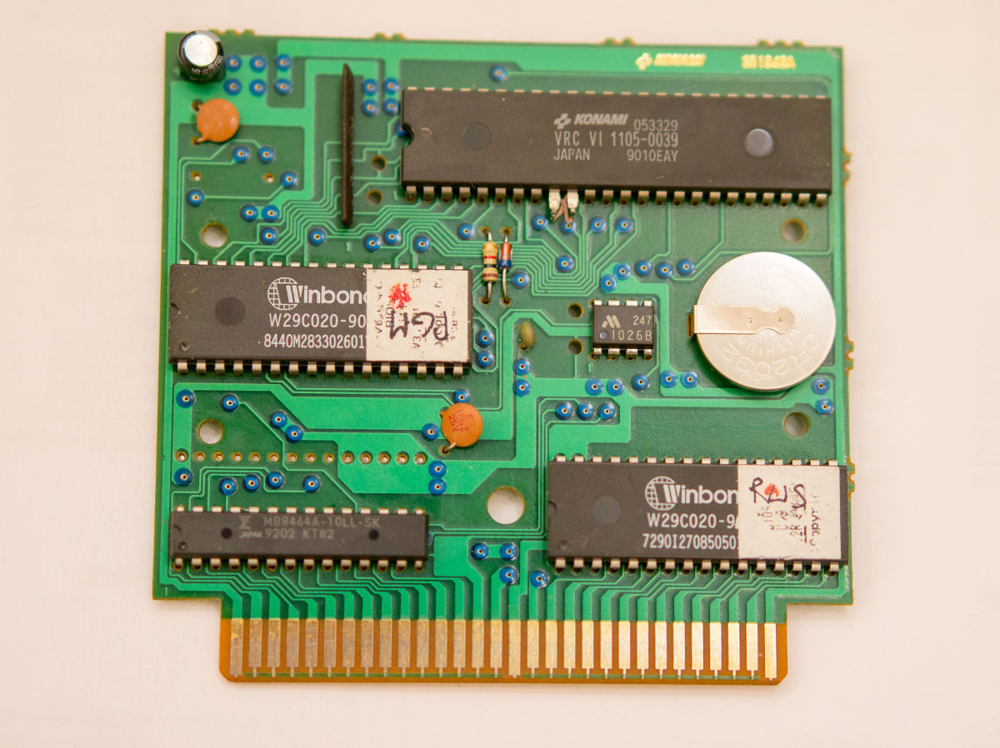

Репродукция Castlevania III - Dracula's Curse
Akumajou Densetsu


Репродукция Akumajou Densetsu на основе оригинального картриджа Фамиком, в котором используется чип VRC6, со встроенным аудио расширением. На клонах типа "Денди" работает без проблем.
Возможна запись одного из ромов:
Akumajou Densetsu (J) [!].nes - Оригинальный ром на японском языке;
Akumajou Densetsu (J) [T+Eng1.0_Vice Translations].nes - Японская версия с Английскийм переводом;
Akumajou Densetsu (J) [T+RusBeta_Cool-Spot].nes - Японская версия с Русско-Английским переводом.
Так-же вы можете предоставить свой ром, главное чтобы его размер был не более 384КБ.
Цена готовой продукции 600грн. (Корпус + Плата + Наклейка)
Связатся со мной можно по Viber, Telegram, Телефон +380992028599 Кузнецов Евгений
Отправка новая почта/укрпочта. Оплата наложка/приват